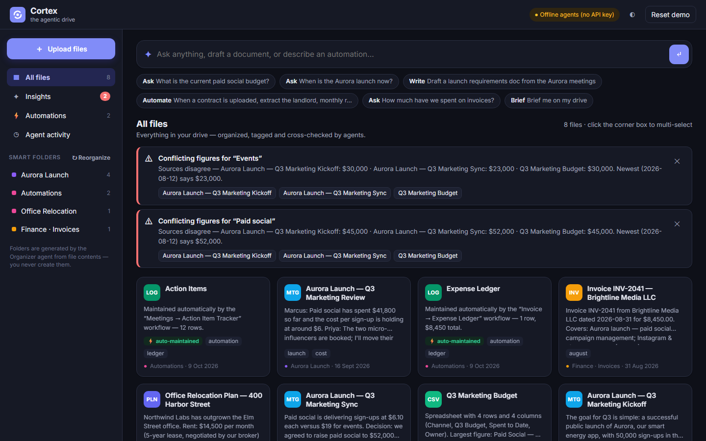

Problem: Google Drive and Dropbox are passive filing cabinets. Files go in, nobody reads them, and they quietly contradict each other. Our answer: a drive that behaves like a diligent colleague who has read every file, remembers what changed, notices when documents disagree, and does the paperwork when new files arrive.

Cortex dashboard: smart folders the agents created, Sentinel conflict alerts, and auto-organized, auto-summarized files.
Core agentic capabilities (all four from the brief are implemented)
1. Proactive OrganizationThe Librarian titles, summarizes, classifies and tags each upload and extracts people and key figures. The Organizer files it into a smart folder it names itself.
2. Semantic RetrievalAsk in plain English. Hybrid search (BM25 + AI query expansion) feeds the Analyst, which answers with clickable citations and prefers newer sources.
3. Cross-Document Synthesis"Draft a requirements doc from the Aurora meetings": the Router picks the sources and the Writer reconciles them into a new living document.
4. Automated WorkflowsInvoice → Expense Ledger.csv; Meeting notes → Action Items tracker. New rules can be written in plain English and backfill existing files.
Our "aha!" features
Sentinel conflict detection: the lease says $15,200/month but the relocation plan budgeted $14,500. Cortex flags it the moment the lease is uploaded and highlights the newest source.
Self-flagging living documents: generated docs remember their sources; when related files arrive they get a ↻ stale badge and regenerate as v2 in one click.
Answers that warn you: "What is the paid social budget?" returns $52,000 with citations, plus a warning that the budget sheet still says $45,000.
Visible agent traces: every result shows which agent did what, in order, so the AI's work is transparent.
2. Brainstorming Process
Reframing: three lenses
Lens
Passive drive today
Active drive (Cortex)
Memory
Remembers bytes
Remembers facts: figures, dates, decisions, and who said them
Attention
Waits for a search
Reacts the moment a file lands: files it, links it, cross-checks it
Agency
Never writes anything
Writes documents, maintains ledgers, refreshes stale docs
Personas
Priya, marketing lead: lives in meeting transcripts; needs "what did we actually decide?"
Dana, ops & finance: drowns in invoices and contracts; needs numbers extracted and reconciled.
Leo, product: joins mid-project; needs a briefing, not a folder tree.
Idea storm → scoring (impact × "aha" × feasibility)
Vanilla HTML/CSS/JS: Drive-style UI, single command bar, drag & drop, live agent traces, dark mode
Resilience
Every agent has a deterministic offline fallback (TF-IDF clustering, extractive answers, regex extraction)
Run it
git clone https://github.com/ranet5-design/cortex-agentic-drive.git
cd cortex-agentic-drive && npm install && npm start # http://localhost:3000
# optional: set ANTHROPIC_API_KEY to power the agents with Claude